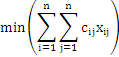

1 Giới thiệu bài toán
Bài toán toán người du lịch thuộc dạng các bài toán N-P khó trong lĩnh vực tối ưu tổ hợp của lý thuyết khoa học máy tính. Là một bài toán rất nổi tiếng và trong thực tế nó thường hay xảy ra. Phát biểu bài toán như sau:
Một người du lịch muốn đi tham quan n thành phố . Xuất phát từ thành phố nào đó, người này muốn đi qua tất cả n thành phố trên sao cho mỗi thành phố đi qua đúng một lần rồi trở về thành phố ban đầu. Biết là chi phí đi lại từ thành phố đến thành phố . Tìm một hành trình cho người du lịch sao cho tổng chi phí đi lại cho cả hành trình đó là nhỏ nhất.
Ta có thể thiết
lập tương ứng 1-1 giữa các hành trình là hoán
vị của tập (1,2,3,…n). Khi đó tổng chi phí trên
hành trình theo hoán vị là:
là hoán
vị của tập (1,2,3,…n). Khi đó tổng chi phí trên
hành trình theo hoán vị là:
Với . Khi đó, yêu cầu bài toán tương đương với dạng bài toán tối ưu tổ hợp sau:
Trong trường hợp không tồn tại đường đi giữa hai thành phố nào đó chẳng hạn và khi đó ta có thể gán . Bài toán có thể biểu diễn bởi một đồ thị vô hướng có trọng số G=(V, E). Trong đó, mỗi thành phố tượng trưng bởi một đỉnh, cạnh nối gữa hai đỉnh tượng trưng cho đường đi giữa 2 thành phố được nối và trọng số trên cạnh đó bằng chi phí đi lại giữa 2 thành phố này. Như vậy yêu cầu bài toán tương đương với việc tìm một chu trình Halminton mà tổng trọng số trên chu trình là ngắn nhất.
Từ đó, ta có thể sử dụng nhiều phương pháp để giải quyết vấn đề được nêu ra dựa trên lý thuyết về đồ thị hay các thuật toán thủ tục khác. Ở báo cáo này chỉ đề cập đến hai phương pháp dùng thuật toán nhánh cận và thuật toán vét cạn.
2 Sử dụng thuật toán vét cạn
Ý tưởng của
phương pháp rất đơn giản, đó là xét
hết tất cả các hành trình, mỗi hành trình tính
tổng chi phí riêng, sau đó lựa chọn hành trình có chi
phí nhỏ nhất. Tuy nhiên, dễ thấy rằng
phương pháp này tỏ ra không khả quan vì việc
duyệt trên tất cả các hành trình là một công việc
hết sức khó khăn, vì ta phải duyệt trên tất
cả  hành trình.
Ví dụ, ta xét trên một máy tính có tốc độ xử
lý 1 tỷ phép tính trên 1 giây, với kích thước bài toán
là , thời
gian tính cho 19! phép toán vào khoảng 19!/(365 x 24 x 3600)≈ 3,8 năm (!).
hành trình.
Ví dụ, ta xét trên một máy tính có tốc độ xử
lý 1 tỷ phép tính trên 1 giây, với kích thước bài toán
là , thời
gian tính cho 19! phép toán vào khoảng 19!/(365 x 24 x 3600)≈ 3,8 năm (!).
void vetCan()
1. int chiPhi=+infty, index=1;
2. for int i=0 to n! do/*Duyet het cac hoan vi */
3. chonHoanVi[i];/*chon hoan vi thu i*/
4. int cost=tinhChiPhi();
5. if cost<chiPhi then
6 chiPhi=cost;/*cap nhat lai chi phi*/
7 index=i;//luu lai thu tu cua hoan vi
Để xây dựng đủ các dãy hoán vị, ta thực hiện thủ tục sau:
Khai báo mảng : int hoanvi[size][n] (size=n!)
Dữ liệu input là T[ ][ ]={…}//n hang , n cot
Mảng t[n]={0,0,0,…,0} để đánh dấu thứ tự đỉnh đã duyệt. (t[i]=0 khi chưa được duyệt và t[i]=1 nếu đã được duyệt).
permT(int start, int next)
//them T[start][next] vao hanh trinh
1. hoanvi[start][next]=
T[start][next];
2. t[next]=1;//Da duyet dinh nay
//De qui tiep tu dinh t[next]
3. for int i=0 to n do
4. if (t[i]==0)then
5. permT(next,i);
Dễ kiểm tra rằng hàm permT(start,next) duyệt đủ n! hoán vị của tập {1,2,3,…,n} (bản thân trong mỗi lần đệ qui thứ k gọi lại k lần hàm permT, và số lần gọi vòng lặp giảm đi vì ta đã sử dụng mảng t[ ] kiểm soát đỉnh đã được duyệt sau mỗi lần gọi).
3 Sử dụng thuật toán nhánh cận
3.1 Tư tưởng thuật toán nhánh cận
Tư tưởng gồm các phép xây dựng giảm bớt sự lựa chọn trong khâu duyệt các trường hợp.
Xét bài toán qui hoạch rời rạc sau: min Z=f(X), trong đó là tập hữu hạn.
Bước 1: Tính cận dưới.
Tìm cận dưới của hàm mục tiêu f(X) trên tập các phương án G hoặc tập con G’ nào đó của G là ξ(G)( hoặc ξ(G’) )sao cho:
hoặc
Bước 2: Chia tập các phương án G thành các trường hợp con- rẽ nhánh. Thứ tự chia như sau:
- Bước 1: Đặt G0≡G, thực hiện chia G0 thành hữu hạn các tập con .
- Bước k1: Giả sử có các tập cần tiếp tục chia nhánh. Ta chọn tập theo qui tắc nào đó và chia thành các tập con . Khi đó, tập cần chia nhánh tiếp theo là:

Đặt lại tên các tập cần chia thành:
Bước 3: Tính lại đánh giá
Nếu tập thì
Vì thế, với tập G’ được chia thành các tập con
sao cho thì cận bất kì của tập đều có , mọi i=1,..,s. Trong tình huống cụ thể ta có thể nhận được đánh giá tốt, tức là đối với một giá trị i nào đó ,
Bước 4: Tính phương án
Ở đây, tùy vào mỗi bài toán cụ thể (ví dụ ta đang xét bài toán người du lịch) ta có thể có những phương pháp khác nhau cho việc lựa chọn phương án. Nhờ vào mỗi phương án tìm được trước đó, ta sẽ cải tiến được cận trên giá trị hàm mục tiêu tốt nhất tại thời điểm đó.
Bước 5: Tiêu chuẩn tối ưu
Giả sử và phương án thỏa mãn điều kiện
Thì là phương án tối ưu của bài toán.
Bước 6: Đánh giá độ chính xác của lời giải xấp xỉ.
Nếu và và là một phương án của bài toán thì . Và nếu đủ nhỏ thì ta có thể lấy làm lời giải xấp xỉ cho bài toán.
3.2 Thuật toán nhánh cận giải bài toán người du lịch
Ta có ma trận chi phí biểu diễn chi tiết chi phí qua lại giữa n thành phố với nhau. Giả thiết và khi không có đường từ thành phố và . Khi đó, bài toán người du lịch có thể viết dưới dạng:

(1).
Trong đó, nếu và thuộc hành trình và bằng 0 nếu ngược lại. Khi ấy:
(2).
(3).
Tập tất cả các phương án của bài toán (tập hữu hạn )được chia nhỏ thành các tập con rời nhau, mỗi tập con sẽ gồm các phương án đi qua hoặc không đi qua một số cặp thành phố xác định trong quá trình giải. Mỗi tập con này được gán với một số thực không âm biểu diễn cận dưới của chi phí của mọi phương án thuộc tập này. Tập con nào đó có cận dưới nhỏ nhất sẽ có nhiều khả năng chứa phương án tối ưu và sẽ được chọn để tiếp tục phân nhánh. Khi phân sao cho các phương án trong bắt buộc phải đi qua cặp thành phố và nào đó, ngược lại các phương án thuộc thì không chứa cặp thành phố và . Khi một tập con nào chỉ gồm một phương án duy nhất, ta sẽ cập nhật tính chi phí C của phương án này. Từ đó, ta cải tiến được phương án tốt nhất hiện tại. Giá trị hàm mục tiêu của bài toán ứng với phương án tốt nhất hiện tại được gọi là giá trị kỉ lục. Rõ ràng, tập con nào có cận dưới lớn hơn giá trị kỉ lục thì chắc chắn không phải là phương án tối ưu, do đó ta có thể bỏ qua không chia nhánh tiếp những tập này. Qua trình chia nhánh kết thúc khi không còn tập con nào cần chia nhánh tiếp và phương án tốt nhất hiện tại sẽ là phương án tối ưu của bài toán. Tính hữu hạn của thuật toán được suy từ tính hữu hạn của tập .
Thủ tục tính cận
Bổ đề Phương án tối ưu x* vẫn còn là tối ưu nếu ma trận chi phí C được “rút gọn” bởi ma trận C’ với:
(4).
Trong đó, là những số thực bất kì.
Chứng minh. Do x* là phương án tối ưu nên
Từ (1) (2) (3) và (4) ta có,
∎.
Để tiện lợi, ta chọn các số sao cho và ma trận C’ trên mỗi hàng và mỗi cột có ít nhất một entry là zero.
Phép toán (4) được gọi là phép rút gọn ma trận hay thủ tục rút gọn. Hằng số γ= được gọi là hằng số rút gọn. Khi đó, γ chính là cận dưới cho giá trị hàm mục tiêu của bài toán.
Thủ tục phân nhánh
Giả sử cần phân nhánh tập . Ta chia thành hai tập và như sau:
Trong đó, chưa xác định trong .
Cặp (r, s) dùng để phân nhánh được chọn sao cho tập có nhiều khả năng chứa phương án tối ưu, còn tập thì không. Nói cách khác, (r, s) được chọn sao cho hiệu số các cận dưới của và là lớn nhất có thể được. Để giải quyết vấn đề này, ta chỉ cần xét tập các phương án ban đầu , vì mọi bài toán con nhận được về sau có cùng cấu trúc như đối với bài toán ban đầu. Giả sử ma trận chi phí C đã được rút gọn , nghĩa là ≥ 0, ∀i, j và trên mỗi hàng, mỗi cột của C có ít nhất một số 0. Tập S0 được chia thành hai tập rời nhau S1 và S2 với.
,
 ,
,
Trong tập S2 cấu trúc bài toán không thay đổi, trừ
ra hàng r
và cột
s bị loại, bởi vì đã đi từ r đến s thì không thể
đi từ r đến bất cứ nơi nào khác, và cũng không
được phép
đi từ bất cứ đâu vào s. Các hàng và cột còn lại chỉ
chứa các phần tử không âm, vì thế ứng với S2 một cận dưới
đối với giá trị hàm mục tiêu tăng thêm là γ(S2 ) =  .
.
Trong
tập do cố
định = 0
nên từ các điều kiện (2), (3) suy ra phải có một
=1(
j ≠ s) và một  =1(i
≠ r ). Vì thế là một
cận dướiđối với giá trị mục
tiêu tăng thêm. Ta sẽ chọn biến sao
cho hiệu giữa các cận dướinày là lớn nhất, nghĩa là
đạt
=1(i
≠ r ). Vì thế là một
cận dướiđối với giá trị mục
tiêu tăng thêm. Ta sẽ chọn biến sao
cho hiệu giữa các cận dướinày là lớn nhất, nghĩa là
đạt
(5).
Nếu thì do hàng r và xột s đều chứa phần tử 0. Vì thế . Do đó, ta chỉ cần xét trường hợp .Khi ấy, và . Khi đóm (5) có thể được thay thế bởi việc chọn để phân nhánh theo qui tắc,
(6).
Ngăn cấm tạo chu tạo chu trình con
Nếu tập được xét không phải là mà là tập,
Ta vẫn áp dụng các qui tắc như đối với . Tuy nhiên, khi trong hàng u có với mọi j≠v thì bắt buộc phải có . Tương tự đối với các cột.
Ngoài ra, khi ta đã chọn thì bắt buộc , muốn vậy ta cần đặt . Mặt khác, đường đi trong chứa cạnh (r,s) thì gồm ít nhất 2 vằ nhiều nhất là n-2 cạnh,
(Không tồn tại k và l để hoặc ). Đồng thời, để ngăn cấm tạo thành chu trình con, dạng ta cần đặt , còn với trường hợp chu trình con dạng ta đặt và

3.3 Cài đặt
Dữ liệu đầu vào là ma trận chi phí C ở ví dụ bài toán n=6;
int matrix[ ][ ]={
{0,3,93,13,33,9},
{4,0,77,42,21,16},
{47,17,0,36,16,28},
{39,90,80,0,56,7},
{28,46,88,33,0,25},
{3,88,18,46,92,0}
};
Qua trình phân nhánh được tóm tắt bởi hình dưới đây,
Fig 1. Quá trình phân nhánh các phương án để giải bài toán người du lịch với n=6.
Thủ tục rút gọn Matrix:
int rutGonMatran(int[][] A,int k)
//k:kich thuoc ma tran A
1.int tem[]=null;/*tao mang chua dong hoac cot*/
2.int sum=0,rutGon;
//rut gon hang
3.for int i=0 to k-1 do
//Trich cac phan tu tren 1 hang
4. for int j=0 to k-1 do
5. tmp[j]=A[i][j];
end for
6. rutGon=minRowCol(tmp);
7. if rutGon>0 then
8. for j=0 to k-1 do
9. A[i][j]-=rutGon;
end for
10. sum+=rutGon;
end if
11. tmp=null;
//rut gon cot
12.for int i=0 to k-1 do
//Trich cac phan tu tren 1 cot
13. for int j=0 to k-1 do
14. tmp[j]=A[j][i];
end for
15. rutGon=minRowCol(tmp);
16. if rutGon>0 then
17. for j=0 to k-1 do
18. A[i][j]-=rutGon;
end for
19. sum+=rutGon;
end if
20. tmp=null;
Ta cũng có thể sử dụng đệ qui để thay cho vòng lặp phép thử phân nhánh và so sánh luôn với giá trị tốt nhất hiện tại từ đó cập nhật giá trị kỷ lục. Thủ tục như sau,
Khai báo
minCost=(int) Math.pow(10, 6),n;
int[ ]resulf=new int[10];/*Mảng tạm lưu giữ cấu hình*/
int[ ]bestConfig=new int[10]; /*Mảng lưu cấu hình tốt nhất*/
int cost=0,start;/*chi phí hành trình và đỉnh xuất phát*/
boolean B[ ]={false};/*Kiem tra dinh da duyet*/
Thủ tục:
void Try(int i)
/*Neu i=n, kiem tra cau hinh co la tot nhat khong.*/
1.if i=numberCity then
2. if cost+matrix[resulf[i1]][resulf[0]]<minCost then
3. minCost=cost+matrix[resulf[i1]][resulf[0];
4. xuatKetQua(resulf,bestConfig,
numberCity);
end if
5.else
6. for int j=0 to numberCity do
/*Duyet cac dinh kha thi chua di qua va thoa man*/
7. if B[j]=false
and cost+
matrix[resulf[i-1]][j]
< minCost
//Ghi nhớ lại kết quả
//Đi theo nhánh chứa đỉnh j
8. resulf[i]=j;
9. B[j]=true;
10. cost+=
matrix[resulf[i-1]][j];
//Tiep tuc chia nhanh
11. Try(i+1);
//Neu khong theo nhanh nay
12. B[j]=true;
13. cost+=
matrix[resulf[i-1]][j];
end if
end for
Như vậy ta tiết kiệm được thời gian rút gọn ma trận (tuy nhiên sẽ mất đi tính nguyên vẹn của thuật toán). Ở đây ta đã khéo sử dụng mảng boolean B[ ] có nhiệm vụ lưu trữ thông tin về các đỉnh xem đã được duyệt trong hành trình chưa.
4. Tham khảo
|
[1] |
PGS TS Nguyễn Đức Nghĩa, Bài giảng Cấu trúc dữ liệu và giải thuật, NXB Đại học Bách Khoa Hà Nội, 2008, 274 trang
|
|
[2] |
Nguyễn Đức Nghĩa, Nguyễn Tô Thành, Toán rời rạc, NXB Đại học Quốc Gia Hà Nội, 2009, tải bản lần 8, 290 trang
|
|
[3] |
EXNAR FILIP, MACHAC OTAKAR ,The Travelling Salesman Problem and its Application in Logistic Practice, Department of economics and management of chemical and food industry University of Pardubice Studentská 95, 532 10 Pardubice CZECH REPUBLIC
|
|
[4] |
Bùi Thế Tâm, Quy hoach Toán rời rạc, Viện Khoa học và Công nghệ Việt Nam, 2008 |